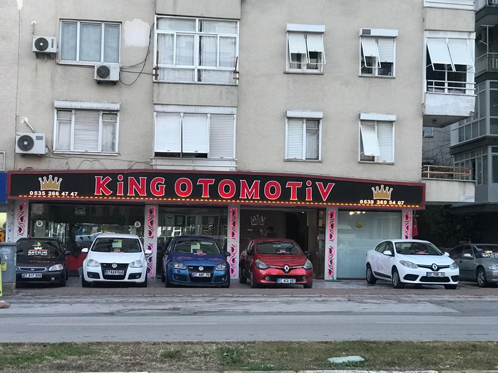
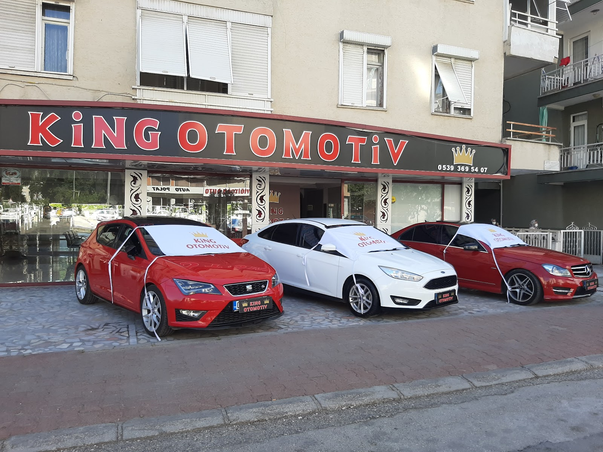
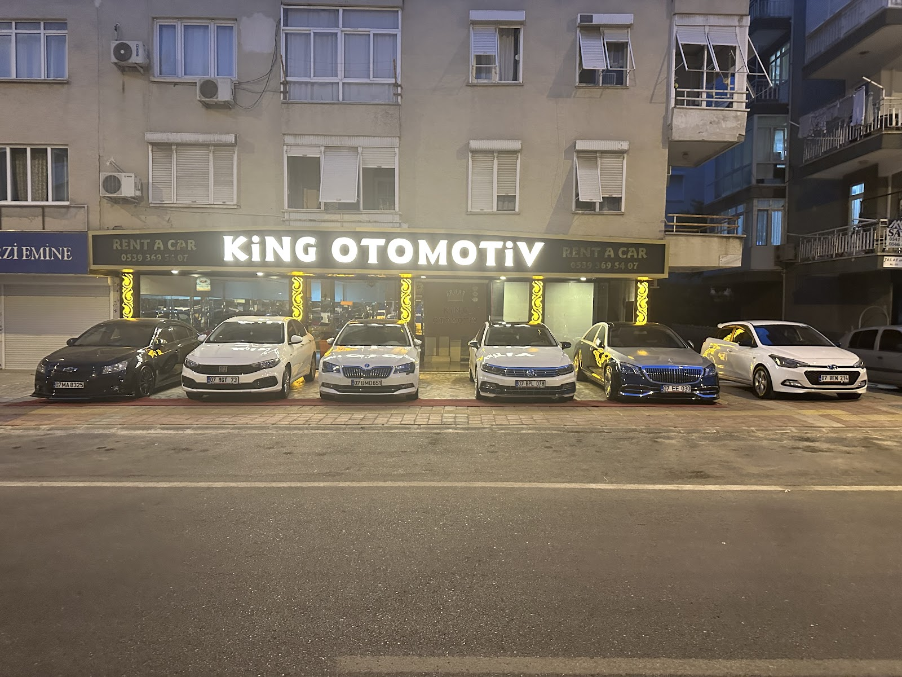
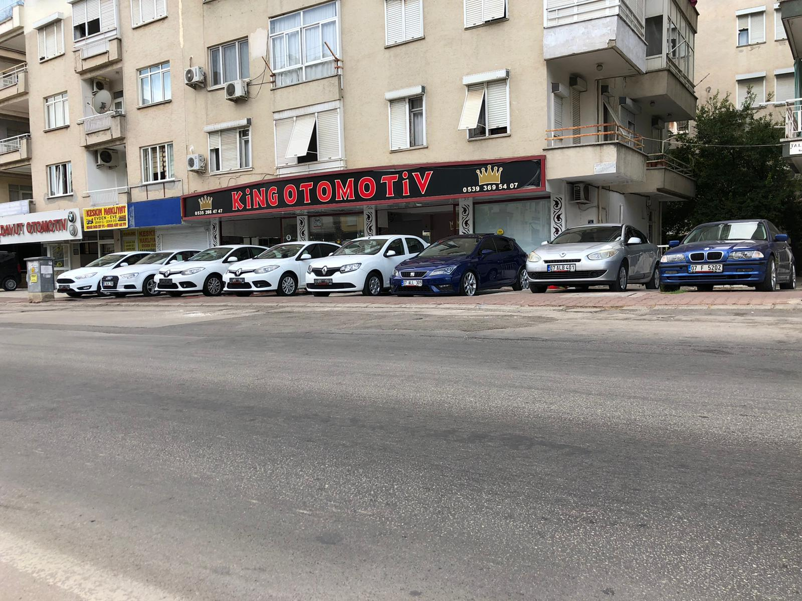

King Otomotiv olarak, bütçenize ve ihtiyacınıza uygun ikinci el araçları şeffaf hizmet anlayışıyla sunuyoruz. Muratpaşa'daki adresimizde, beklentilerinizi karşılayacak güvenli bir alışveriş deneyimi için sizleri bekliyoruz.
Gövde tipi, vites ve kilometreye göre süzün; beğendiğiniz aracı tek dokunuşla WhatsApp'tan sorun.
Örnek ilanlar. Yayında galerinin güncel stoğu buraya bağlanır; fiyat ve ayrıntı bilgisi galeriden sorulur.
İlgilendiğiniz aracı ve size uygun zamanı seçin; mesaj WhatsApp'a hazırlanır. Randevu, galerinin teyidiyle kesinleşir.
Tutarları ve bankanızın size verdiği aylık oranı yazın; taksit anında hesaplanır.
Bilgi amaçlıdır. Kullanılabilecek kredi tutarı, vade ve oranı bankanız ve yürürlükteki düzenlemeler belirler; vergi ve masraflar dahil değildir.




Araç alım sürecinin her aşamasında doğru ve dürüst bilgilendirme ile güvenle karar vermenizi sağlıyoruz.
Müşterilerimizin özel olarak teşekkür ettiği Cemil Bey'in samimi ve profesyonel yaklaşımıyla kendinizi güvende hissedersiniz.
Portföyümüzdeki tüm araçları kalite standartlarımıza uygun şekilde seçerek beğeninize sunuyoruz.
Sadece araç satışı sırasında değil, satış öncesi ve sonrasında da her sorunuza içtenlikle yanıt veriyoruz.
📍 Güvenlik, Turgut Reis Cd. No:153, 07030 Muratpaşa/Antalya
🕑 Pzt–Paz 24 saat
360° GÖRÜNÜM
Görüntüyü fareyle ya da parmağınızla çevirin; bulunduğumuz sokağı ve girişimizi 360° gezin, gelirken zorlanmayın.
Görüntü: Google Street View · Yol tarifi al